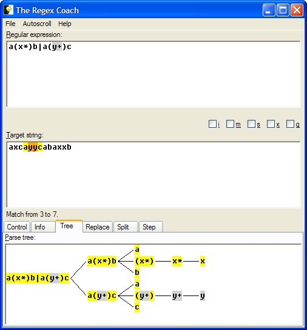

You now see a 'parse tree' of the regular expression. This is how the regex engine dissects the regular expression in order to process it.
Note how the grey areas within the parse tree reflect your selection in the regex pane.
Also note that you can resize the whole application window and the size of the panes relative to each other. You can, e.g., do this to fit the whole parse tree into the pane without the need to scroll.